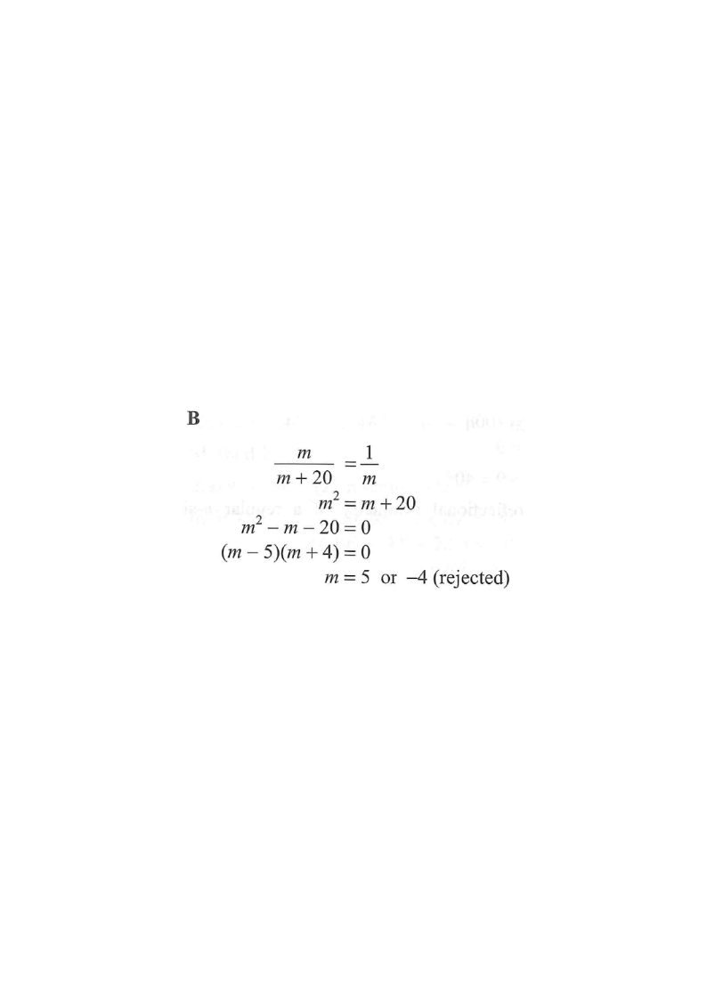

HKDSE 2014 Paper 2 — Q27
A box contains $m$ yellow balls and 20 black balls. If a ball is randomly drawn from the box, then the probability of drawing a yellow ball is $\dfrac{1}{m}$. Find the value of $m$.
- 4
- 5
- 15
- 25

Number of yellow balls $= m$
Number of black balls $= 20$
Total number of balls in the box $= m + 20$
$P(\text{yellow}) = \dfrac{\text{number of yellow balls}}{\text{total number of balls}}$ $= \dfrac{m}{m+20}$
$\dfrac{m}{m+20} = \dfrac{1}{m}$
Cross-multiply: $m \times m = 1 \times (m+20)$
$m^{2} = m + 20$
$m^{2} - m - 20 = 0$
$(m - 5)(m + 4) = 0$
$m = 5$ or $m = -4$
Since $m$ is the number of yellow balls, $m$ must be a positive integer.
So $m = -4$ is rejected, leaving $m = 5$.
Check: $P(\text{yellow}) = \dfrac{5}{5+20} = \dfrac{5}{25} = \dfrac{1}{5}$ ✓